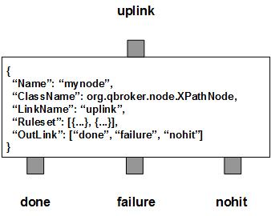

XPathNode parses XML payload of JMS messages and retrieves data from the XML payload according to the predifined XPath expressions. It then sets them into message's properties. The original XML payload should be always stored in the message body. XPathNode will not modify the XML payload. There are three outlinks, done for all parsed messages, nohit for those messages not belonging to any predefined rulesets, failure for those messages failed in the XPath evaluations.
XPathNode contains a number of predefined rulesets. These rulesets categorize messages into non-overlapping groups. Therefore, each rule defines a unique message group. The ruleset also defines the XPath expressions. The original XML payload should be always stored in the message body. Due to JMS specifications, you have to clear user properties before resetting them on a readonly message. You can specify ResetOption in a ruleset so that the message header will be reset for modifications. Its value is 0 for no reset, 1 for optional reset and 2 for guaranteed reset.
XPathNode supports dynamic setting of xpath expressions. It means you can reference properties of the message in your xpath expressions. XPathNode will retrieve the data from the incoming message and compile the expressions before the evaluation.
XPathNode allows one of the xpath expressions to select a list of items. In this case, ListKey has to be defined. It specifies the key for that special xpath expression. The expression will be applied in the context of XPathConstants.NODESET. XPathNode will retrieves the data from each item and appends them one by one with a predefined delimiter.
XPathNode always adds an extra ruleset for the nohit messages. This nohit ruleset is always the first ruleset with the id of 0. On the node level, DisplayMask and StringProperty control the display result of outgoing messages.
You are free to choose any names for the three fixed outlinks. But XPathNode always assumes the first outlink for done, the second for failure and the last for nohit.
The XPath evaluation is executed via the pre-defined rulesets. Therefore, the configuration of the rulesets is critical to the operations of XPathNode. Here are complete properties of rulesets for XPathNode.
| Property Name | Data Type | Requirement | Description | Examples |
|---|---|---|---|---|
| Name | alphanumeric with no spaces | mandatory | name of the ruleset | event |
| ResetOption | integer | optional | option to reset properties | 2 (default: 0) |
| XPathExpression | map | mandatory for XPath only | for resetting properties of messages | see example |
| ListKey | string | key name of the XPath expression for list aggregation | to select a list of items | ID |
| Delimiter | string | required for list aggregation | delimiter used to separate listed data | , |
| PreferredOutLink | alphanumeric with no spaces | mandatory for bypass only | name of the preferred outlink | bypass |
| JMSPropertyGroup | list | optional | list of pattern groups on properties to select messages | see example |
| XJMSPropertyGroup | list | optional | list of pattern groups on properties to exclude messages | see example |
| PatternGroup | list | optional | list of pattern groups on body to select messages | see example |
| XPatternGroup | list | optional | list of pattern groups on body to exclude messages | see example |
| StringProperty | map | optional | for setting the user properties on the messages | see example |
{
...
"Ruleset": [{
"Name": "bypass",
"PreferredOutLink": "BYPASS",
"JMSPropertyGroup": [{
"JMSType": "^score$"
}]
}],
...
}
where it routes the messages to the outlink of BYPASS.
Here is an example of the XPath ruleset.
{
...
"Ruleset": [{
"Name": "script",
"JMSPropertyGroup": [{
"operation": "^start$"
}],
"ResetOption": "1",
"XPathExpression": {
"ActionScript": "/*/StartScript"
}
},{
...
}],
...
}
where it extracts the content from the XML payload and sets the value on the
property of ActionScript.
Here is an example of XPathNode:
{
"Name": "node_xpath",
"ClassName": "org.qbroker.node.XPathNode",
"Description": "xparse messages",
"Operation": "evaluate",
"LinkName": "root",
"Capacity": "6",
"DisplayMask": "0",
"Debug": "19",
"Ruleset": [{
"Name": "test",
"ResetOption": "1",
"JMSPropertyGroup": [{
"JMSType": "."
}],
"XPathExpression": {
"MTC": "//MediaTimePoint",
"RTC": "//MediaRelTimePoint",
"Millis": "//MediaTimeMillis"
},
}],
"OutLink": [
"parsed",
{
"Name": "failure",
"Capacity": "24",
"Partition": "0,6"
},{
"Name": "nohit",
"Capacity": "24",
"Partition": "0,6"
}
]
}